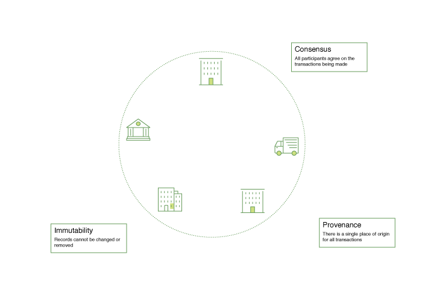

Introduction
Hyperledger Fabric is a platform for distributed ledger solutions underpinned by a modular architecture delivering high degrees of confidentiality, resiliency, flexibility and scalability. It is designed to support pluggable implementations of different components and accommodate the complexity and intricacies that exist across the economic ecosystem.
Hyperledger Fabric delivers a uniquely elastic and extensible architecture, distinguishing it from alternative blockchain solutions. Planning for the future of enterprise blockchain requires building on top of a fully vetted, open-source architecture; Hyperledger Fabric is your starting point.
We recommended first-time users begin by going through the rest of the introduction below in order to gain familiarity with how blockchains work and with the specific features and components of Hyperledger Fabric.
Once comfortable -- or if you\'re already familiar with blockchain and Hyperledger Fabric -- go to Getting Started and from there explore the demos, technical specifications, APIs, etc.
What is a Blockchain?
A Distributed Ledger
At the heart of a blockchain network is a distributed ledger that records all the transactions that take place on the network.
A blockchain ledger is often described as decentralized because it is replicated across many network participants, each of whom collaborate in its maintenance. We'll see that decentralization and collaboration are powerful attributes that mirror the way businesses exchange goods and services in the real world.
In addition to being decentralized and collaborative, the information recorded to a blockchain is append-only, using cryptographic techniques that guarantee that once a transaction has been added to the ledger it cannot be modified. This property of immutability makes it simple to determine the provenance of information because participants can be sure information has not been changed after the fact. It's why blockchains are sometimes described as systems of proof.
*Smart Contracts*
To support the consistent update of information -- and to enable a whole host of ledger functions (transacting, querying, etc) -- a blockchain network uses smart contracts to provide controlled access to the ledger.

Smart contracts are not only a key mechanism for encapsulating information and keeping it simple across the network, they can also be written to allow participants to execute certain aspects of transactions automatically.
A smart contract can, for example, be written to stipulate the cost of shipping an item that changes depending on when it arrives. With the terms agreed to by both parties and written to the ledger, the appropriate funds change hands automatically when the item is received.
Consensus
The process of keeping the ledger transactions synchronized across the network -- to ensure that ledgers only update when transactions are approved by the appropriate participants, and that when ledgers do update, they update with the same transactions in the same order -- is called consensus.

We'll learn a lot more about ledgers, smart contracts and consensus later. For now, it's enough to think of a blockchain as a shared, replicated transaction system which is updated via smart contracts and kept consistently synchronized through a collaborative process called consensus.
Why is a Blockchain useful?
Today's Systems of Record
The transactional networks of today are little more than slightly updated versions of networks that have existed since business records have been kept. The members of a Business Network transact with each other, but they maintain separate records of their transactions. And the things they're transacting -- whether it's Flemish tapestries in the 16th century or the securities of today -- must have their provenance established each time they're sold to ensure that the business selling an item possesses a chain of title verifying their ownership of it.
What you're left with is a business network that looks like this:

Modern technology has taken this process from stone tablets and paper folders to hard drives and cloud platforms, but the underlying structure is the same. Unified systems for managing the identity of network participants do not exist, establishing provenance is so laborious it takes days to clear securities transactions (the world volume of which is numbered in the many trillions of dollars), contracts must be signed and executed manually, and every database in the system contains unique information and therefore represents a single point of failure.
It's impossible with today's fractured approach to information and process sharing to build a system of record that spans a business network, even though the needs of visibility and trust are clear.
The Blockchain Difference
What if instead of the rat's nest of inefficiencies represented by the "modern" system of transactions, business networks had standard methods for establishing identity on the network, executing transactions, and storing data? What if establishing the provenance of an asset could be determined by looking through a list of transactions that, once written, cannot be changed, and can therefore be trusted?
That business network would look more like this:

This is a blockchain network. Every participant in it has their own replicated copy of the ledger. In addition to ledger information being shared, the processes which update the ledger are also shared. Unlike today's systems, where a participant's private programs are used to update their private ledgers, a blockchain system has shared programs to update shared ledgers.
With the ability to coordinate their business network through a shared ledger, blockchain networks can reduce the time, cost, and risk associated with private information and processing while improving trust and visibility.
You now know what blockchain is and why it's useful. There are a lot of other details that are important, but they all relate to these fundamental ideas of the sharing of information and processes.
What is Hyperledger Fabric?
The Linux Foundation founded Hyperledger in 2015 to advance cross-industry blockchain technologies. Rather than declaring a single blockchain standard, it encourages a collaborative approach to developing blockchain technologies via a community process, with intellectual property rights that encourage open development and the adoption of key standards over time.
Hyperledger Fabric is one of the blockchain projects within Hyperledger. Like other blockchain technologies, it has a ledger, uses smart contracts, and is a system by which participants manage their transactions.
Where Hyperledger Fabric breaks from some other blockchain systems is that it is private and permissioned. Rather than an open permissionless system that allows unknown identities to participate in the network (requiring protocols like Proof of Work to validate transactions and secure the network), the members of a Hyperledger Fabric network enroll through a Membership Service Provider (MSP).
Hyperledger Fabric also offers several pluggable options. Ledger data can be stored in multiple formats, consensus mechanisms can be switched in and out, and different MSPs are supported.
Hyperledger Fabric also offers the ability to create channels, allowing a group of participants to create a separate ledger of transactions. This is an especially important option for networks where some participants might be competitors and not want every transaction they make - a special price they\'re offering to some participants and not others, for example - known to every participant. If two participants form a channel, then those participants -- and no others -- have copies of the ledger for that channel.
Shared Ledger
Hyperledger Fabric has a ledger subsystem comprising two components: the world state and the transaction log. Each participant has a copy of the ledger to every Hyperledger Fabric network they belong to.
The world state component describes the state of the ledger at a given point in time. It's the database of the ledger. The transaction log component records all transactions which have resulted in the current value of the world state. It's the update history for the world state. The ledger, then, is a combination of the world state database and the transaction log history.
The ledger has a replaceable data store for the world state. By default, this is a LevelDB key-value store database. The transaction log does not need to be pluggable. It simply records the before and after values of the ledger database being used by the blockchain network.
Smart Contracts
Hyperledger Fabric smart contracts are written in chaincode and are invoked by an application external to the blockchain when that application needs to interact with the ledger. In most cases chaincode only interacts with the database component of the ledger, the world state (querying it, for example), and not the transaction log.
Chaincode can be implemented in several programming languages. The currently supported chaincode language is Go with support for Java and other languages coming in future releases.
Privacy
Depending on the needs of a network, participants in a Business-to-Business (B2B) network might be extremely sensitive about how much information they share. For other networks, privacy will not be a top concern.
Hyperledger Fabric supports networks where privacy (using channels) is a key operational requirement as well as networks that are comparatively open.
Consensus
Transactions must be written to the ledger in the order in which they occur, even though they might be between different sets of participants within the network. For this to happen, the order of transactions must be established and a method for rejecting bad transactions that have been inserted into the ledger in error (or maliciously) must be put into place.
This is a thoroughly researched area of computer science, and there are many ways to achieve it, each with different trade-offs. For example, PBFT (Practical Byzantine Fault Tolerance) can provide a mechanism for file replicas to communicate with each other to keep each copy consistent, even in the event of corruption. Alternatively, in Bitcoin, ordering happens through a process called mining where competing computers race to solve a cryptographic puzzle which defines the order that all processes subsequently build upon.
Hyperledger Fabric has been designed to allow network starters to choose a consensus mechanism that best represents the relationships that exist between participants. As with privacy, there is a spectrum of needs; from networks that are highly structured in their relationships to those that are more peer-to-peer.
We'll learn more about the Hyperledger Fabric consensus mechanisms, which currently include SOLO, Kafka, and will soon extend to SBFT (Simplified Byzantine Fault Tolerance), in another document.
Where can I learn more?
We provide a number of tutorials and samples where you'll be introduced to most of the key components within a blockchain network, learn more about how they interact with each other, and then you'll actually get the code and run some simple transactions against a running blockchain network. We also provide tutorials for those of you thinking of operating a blockchain network using Hyperledger Fabric.
A deeper look at the components and concepts brought up in this introduction as well as a few others and describes how they work together in a sample transaction flow.